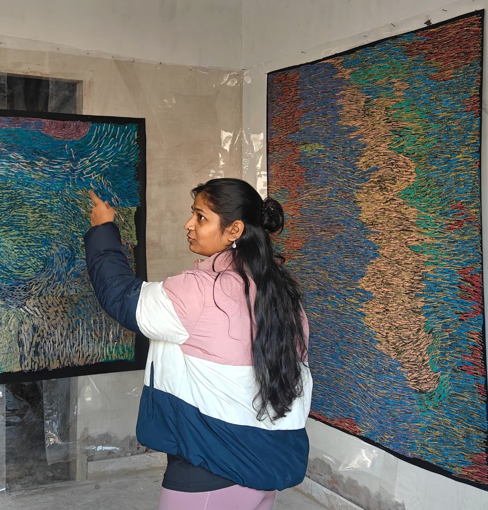

How do materials alter what we perceive before we consciously interpret them?
Kritika Goel (b. New Delhi) works across painting, installation, and digital media, exploring how personal perception and everyday domestic friction are translated into layered abstract surfaces.